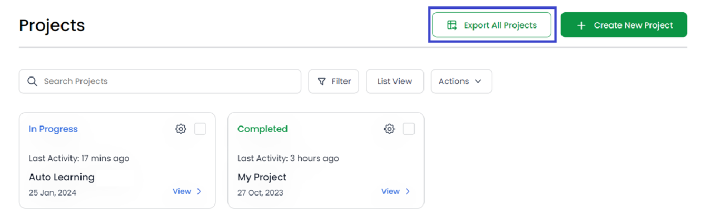
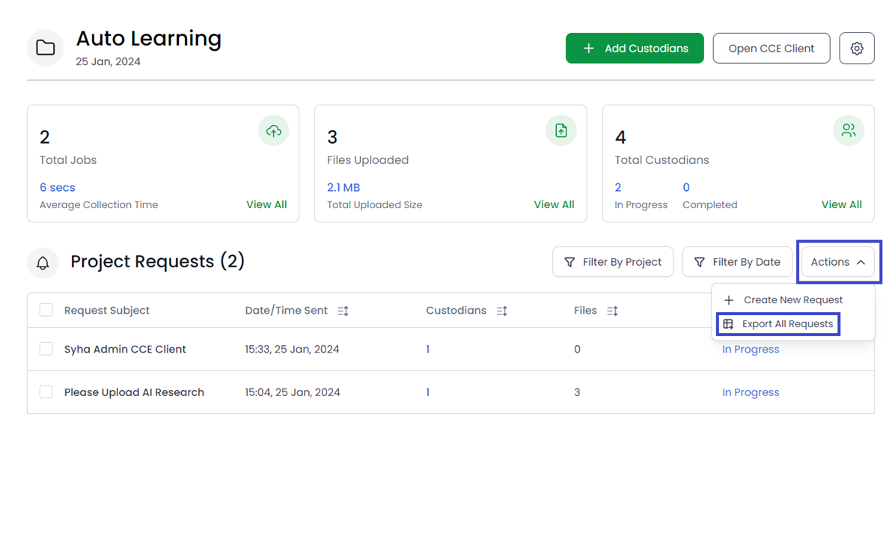
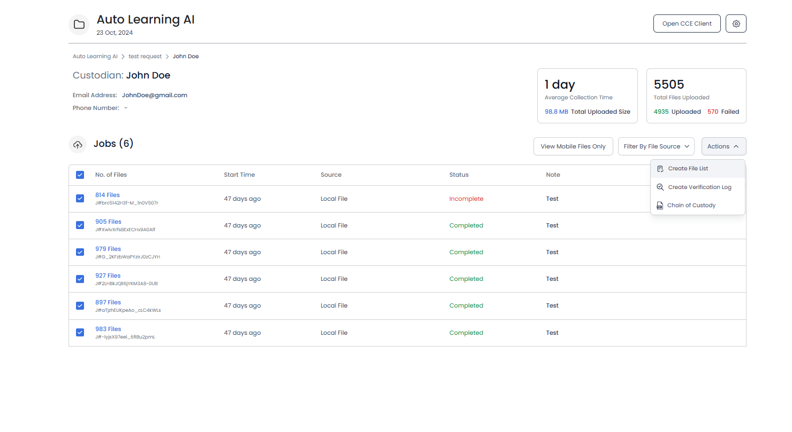

You can export your projects, requests, jobs, and files as CSV files via the respective export buttons.
To export projects, go to your Projects page and click on the Export All Projects button.

Open your desired project to view the project requests. You can export a
few selected requests as well as all the requests generated.
To
export a specific request, select the checkbox next to it - an
Export Selected button will appear above the table. Click on the
Export Selected button.
To export all the generated requests, click on Actions -> Export All Requests.
To export files of the custodians’ jobs, click on the respective custodian in a request. You will be able to see the details of the custodian and their jobs. Select all the jobs you wish to export the files of by clicking on the checkboxes next to them, then click on Actions -> Create File List.
